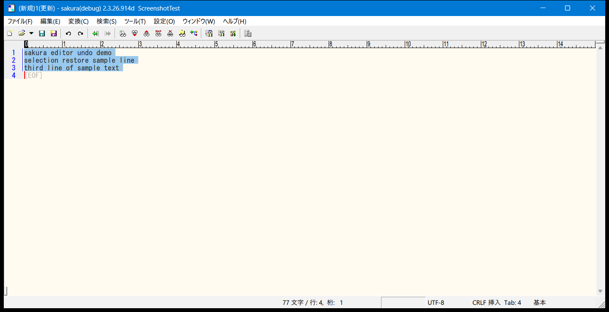

Undo選択復元
範囲選択した状態での削除・置換をUndoした際に、戻ったテキストを改めて選択状態にする機能(VS Code等と同じ挙動)の設計記録。1個の真偽値フラグだけで実現しているデータモデルと、マルチカーソル環境下でのスロット単位の復元処理をまとめる。

設計方針
従来のsakuraでは、範囲選択した状態で削除・置換を行い、その後Undoでテキストを元に戻しても、キャレットのみが復元され選択状態には戻らなかった。VS Code等では「範囲選択→削除」をUndoすると、戻ったテキストが改めて選択状態になる。この挙動をsakura本体にも入れたのが本フラグ。
選択のアンカーがどちら側だったか(方向)までは記録せず、「削除・置換の直前が選択状態だったか」という1個の真偽値だけを持つ。Undo時は削除範囲の先頭〜末尾をそのまま選択範囲として使うため、方向の情報自体が不要という判断。
素のBackSpace/Delete(選択なしの1文字削除)はこの分岐を通らないため対象外。矩形選択の削除は別経路(DeleteData2)を通るため、矩形選択モード自体の復元が別途必要になるスコープ外とした。
削除後には選択すべき対象のテキストが存在しないため、単一カーソル時代からRedoは一貫して選択を出さない仕様。この非対称は設計判断であり、見落としではない。
コミット3f678076d(「マルチカーソル処理実装 Ver.3 undo選択領域の復元」、2026-08-31)。表題はマルチカーソル寄りだが、実際の内容は本機能そのものとNKMM_MULTI_CURSOR側のUndo/Redo復元機構(nCursorSlot)を同時に作った回のため両方が1コミットに含まれている。マルチカーソルの一般的なアーキテクチャ自体はマルチカーソル編集を参照。
01データモデル
削除・置換のUndo/Redo単位であるCReplaceOpe(COpe.h)に、bool bHadSelection = falseを1個追加しただけ。既存のCLineBookmarked等と同じ「軽量な1フラグ追加」のパターンを踏襲している。
// COpe.h — CReplaceOpe
bool bHadSelection = false; // この置換の直前が選択状態だったか(Undoでの選択復元用)| フィールド/設定 | 場所 | 役割 |
|---|---|---|
CReplaceOpe::bHadSelection | COpe.h | 削除・置換の直前が選択状態だったかの1フラグ。方向は持たない |
COpe::nCursorSlot | COpe.h | NKMM_MULTI_CURSOR用。マルチカーソル一括編集でどのカーソルの編集かを識別する識別子(0=プライマリ、1以上=extra)。選択復元自体はこれ無しでも成立するが、マルチカーソル環境下での復元はこれに依存する |
CommonSetting_Edit::m_bUndoRestoreSelection | CommonSetting.h | 機能全体のON/OFF。既定値true(CShareData.cpp、VS Code既定に合わせる)。ini [Common]セクションのbUndoRestoreSelectionとして読み書き(CShareData_IO.cpp) |
値のセットはCEditView::DeleteData()が「選択範囲を削除する」分岐でReplaceData_CEditView(..., true /* bHadSelection */)を呼ぶことで行われる。ReplaceData_CEditView/2/3(CEditView.h/CEditView_Command_New.cpp)の末尾に省略可能引数bool bHadSelection = falseが追加され、最終的にReplaceData_CEditView3内で生成するCReplaceOpeの同名フィールドへそのまま渡される。
// CEditView_Command_New.cpp — DeleteData()の選択削除分岐
..., true /* bHadSelection: 選択範囲の削除なのでUndoで選択復元の対象にする */素の1文字BackSpace/Deleteはこの分岐を通らないためbHadSelectionは既定のfalseのままとなり、対象外になる。
02Undo時の復元ロジック
Command_UNDO()のOPE_REPLACE処理内、bFastMode(大量Opeの一括Undoで詳細な後処理を丸ごと省略する経路)ではない通常経路に、bHadSelectionと設定m_bUndoRestoreSelectionが両方真のときだけ選択状態を復元する分岐が入っている。
// CViewCommander_Edit.cpp — Command_UNDO() の OPE_REPLACE 処理
if( !bFastMode && pcReplaceOpe->bHadSelection &&
GetDllShareData().m_Common.m_sEdit.m_bUndoRestoreSelection ){
CLayoutPoint ptRestoredTo;
GetDocument()->m_cLayoutMgr.LogicToLayout( pcReplaceOpe->m_ptCaretPos_PHY_To, &ptRestoredTo );
m_pCommanderView->GetSelectionInfo().m_sSelectBgn.Set( ptCaretPos_Before );
m_pCommanderView->GetSelectionInfo().m_sSelect = CLayoutRange( ptCaretPos_Before, ptRestoredTo );
}ptCaretPos_Before(削除範囲の先頭、レイアウト単位に変換済み)を選択アンカーとし、pcReplaceOpe->m_ptCaretPos_PHY_To(削除範囲の末尾、論理座標)をLogicToLayout()で変換したptRestoredToを選択先としてCLayoutRangeを組み立てる。選択の向きの情報を持たないため、常に「先頭→末尾」の1方向で選択範囲を組み立てる形になる。
bFastModeではptCaretPos_Before等がこのループ内で計算されない分岐のため、このブロック自体が対象外になる。Redo側には対応する分岐が存在しない(概要参照)。
03マルチカーソルとの関係
NKMM_MULTI_CURSORが有効な場合、1回のUndo/Redoブロックに複数カーソル分のCReplaceOpeが積まれる。各OpeのnCursorSlot(0=プライマリ、1以上=extra)を手がかりに、スロットごとに独立して選択を復元する。
この復元処理は当初Command_UNDO/Command_REDOにほぼ同一のコードが2箇所複製されていたが、後続のリファクタリングコミット25ba202b6でRestoreMultiCursorAfterUndoRedo(pcOpeBlk, nOpeBlkNum, bIsUndo)という1つの共通関数に統合されている。本フラグ自体の判定ロジックはこの関数化で変わっていない。
// CViewCommander_Edit.cpp — RestoreMultiCursorAfterUndoRedo() 冒頭コメントより
// bIsUndoで変わる点は3つだけ:
// - 復元元: Undoは各スロットで最初に見つかったOpeの_Before、Redoは最後に見つかったOpeの_After
// - 選択復元: UndoのみNKMM_UNDO_RESTORE_SELECTION+bHadSelectionのOPE_REPLACEから復元する
// (Redoは削除後に選択すべき対象が残らないため、単一カーソル時も一貫して選択を出さない仕様)スロット収集ループでは、Undoの場合bHadSelectionが立っているOPE_REPLACEをSSlotRestore::pcSelOpeとして記録する。
if( bIsUndo && pcCandidate->GetCode() == OPE_REPLACE ){
CReplaceOpe* pcCandidateReplace = static_cast(pcCandidate);
if( pcCandidateReplace->bHadSelection ) pSlot->pcSelOpe = pcCandidateReplace;
} 見つかったスロットは、そのOpeのm_ptCaretPos_PHY_Before/_Toからプライマリ・各extraそれぞれの選択(アンカー位置・選択先)を独立に復元する。見つからなければそのカーソルはキャレットのみ(選択なし)に戻る。extraカーソル分の選択は、プライマリの新しい選択アンカー基準の相対値(nAnchorRelLine/nAnchorRelColumn)として作り直され、既存のm_vExtraCursorsは丸ごと置き換えられる。このブロックに現れなかったextra(非アクティブだった、または元々存在しなかったもの)は復元しようがなく消える。
プライマリ自身の分がこの一括編集に含まれていない場合(通常起こらないが、プライマリの選択範囲が空で編集自体が無かった場合等)、他のextra分だけ復元しても相対化の基準点が無いため、関数は何も復元せずに戻る。
マルチカーソル全般の設計(相対オフセット方式、Alt+Clickでの追加等)はマルチカーソル編集の設計リファレンスを参照。
04既知の制約
- Redoは選択状態を復元しない(単一カーソル・マルチカーソルいずれも)。削除後には選択すべき対象のテキストが残らないため、という設計判断であり、単一カーソル時代から一貫した仕様。
- 対応は
CReplaceOpe(OPE_REPLACE)のみ。矩形選択の削除は別経路(DeleteData2)を通るため対象外(矩形選択モード自体の復元が別途必要になるためスコープ外、とmy_config.hのコメントに明記)。 - 選択の向き(アンカーがどちら側だったか)は記録しない。Undoで復元される選択は常に「削除範囲の先頭→末尾」の1方向になる。
- ini
[Common]のbUndoRestoreSelection(既定true)専用の設定で、共通設定ダイアログに対応する項目は無い(NKMM_MULTI_CURSORのbMultiCursorMergeOverlappingと同じ運用)。 - 置換(検索/置換ダイアログ経由のReplace等)で選択状態から実行したケースが
bHadSelection=trueを経由するかどうかは、DeleteData()以外のReplaceData_CEditView系呼び出し元を全て洗い出せておらず未確認(changelog参照)。
05変更ファイル一覧
sakura_core/COpe.h—CReplaceOpe::bHadSelection、COpe::nCursorSlotを追加sakura_core/view/CEditView.h/CEditView_Command_New.cpp—ReplaceData_CEditView/2/3へのbHadSelection引数追加、DeleteData()からの伝播sakura_core/cmd/CViewCommander_Edit.cpp—Command_UNDO()のOPE_REPLACE処理の選択復元分岐、RestoreMultiCursorAfterUndoRedo()(25ba202b6で関数化)sakura_core/env/CommonSetting.h—CommonSetting_Edit::m_bUndoRestoreSelectionsakura_core/env/CShareData.cpp— 既定値trueで初期化sakura_core/env/CShareData_IO.cpp— ini[Common]のbUndoRestoreSelection読み書きsakura_core/my_config.h—NKMM_UNDO_RESTORE_SELECTIONフラグ定義
詳細な経緯・調査範囲・未確認事項はchangelog/NKMM_UNDO_RESTORE_SELECTION.mdを参照。